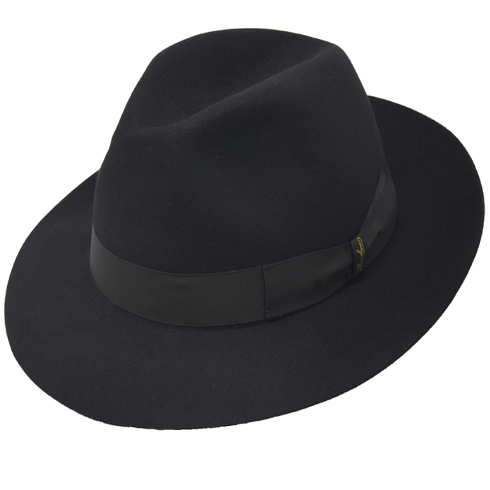
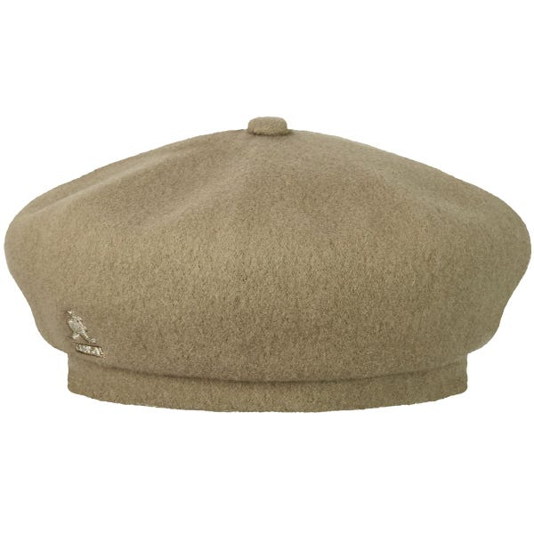
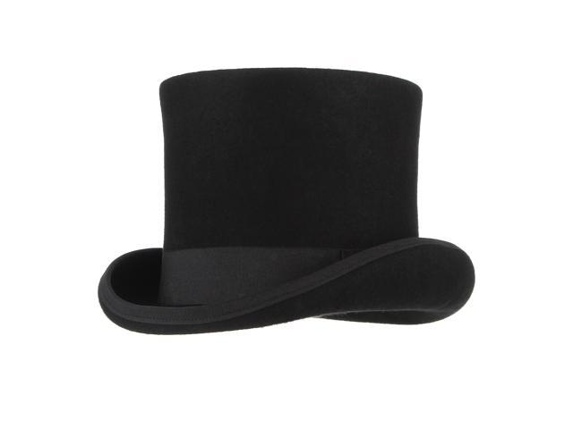

Our Favorite Hats
The Fedora
The fedora is a hat with a soft brim and indented crown. It is typically creased lengthwise down the crown and "pinched" near the front on both sides. The term fedora was in use as early as 1891.
Beret
A beret is a soft, round, flat-crowned cap, usually of woven, hand-knitted wool, crocheted cotton, wool felt, or acrylic fibre. Mass production of berets began in 19th century France and Spain, and the beret remains associated with these countries.
Top Hat
A top hat is a tall, flat-crowned hat for men traditionally associated with formal wear in Western dress codes, meaning white tie, morning dress, or frock coat. Traditionally made of black silk or sometimes grey, the top hat emerged in Western fashion by the end of 18th century.
